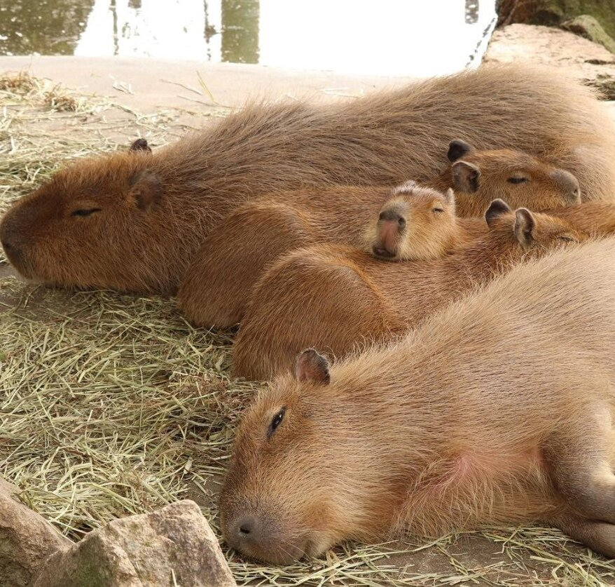

Страница про капибару
На сегодняшний момент интернет буквально взорван фотографиями и постами о этом милом животном. Многие называют ее бобром, большой морской свинкой или даже выдрой В своей статье я хочу рассказать вам несколько фактов, которые помогут познакомится с капибарой поближе. Приятного прочтения!
Видео про капибару
Звуки капибары
Где живут капибары
Интересные факты про капибару
- Капибара считается самым огромным грызуном среди своего семейства. Размер взрослого представителя вида может достигать 1,35 метра по длине, и 60 сантиметров в высоте в холке. По весу животное может превосходить размеры человека: самки достигают 60-65 килограмм, а самцы могут откормится аж до 90 килограмм. Однако, такой крупный калибр встретишь редко, да и внешне выглядит впечатляюще.
- Капибару поистине можно назвать самым миролюбивым животным на планете. Не было зарегистрировано случаев покушения на человека и других сородичей. Грызун очень доверчивый и легко идет на контакт с человеком. Прямо как морская свинка!
- Водосвинки не существуют в одиночку. Обычно в природе можно встретить стаю грызунов, плескающихся около водоема. В общине грызуны существуют как настоящая шведская семья. А именно: самка капибары зачастую подкармливает молоком не своих детенышей.
- На свет у мамы появляется обычно около восьми детенышей, которые спустя несколько часов уже могут спокойно передвигаться на своих лапках и идти вслед за мамой.